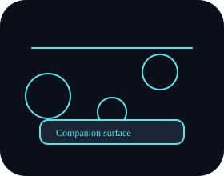

Ping flow
Launch /health → Worker validates signature → ephemeral reply.
Phase 5 · Companion site & runbook library
Public-facing context, failure galleries, and interactive runbooks live here alongside the diagnostic bones that power slash commands.

BotMedic includes Discord request verification, shared command/rule metadata, incident fixtures, generated runbooks, Vitest regression tests, CI deployment, and a metrics report generated from repo and CI evidence.
The public report keeps portfolio claims tied to raw artifacts instead of hand-counted numbers.
Review metricsLaunches /health or /helpme from a guild member context.
Validates signatures, routes commands, writes telemetry, returns ephemeral response.
Switches on command name, consults rule cases, and builds internal + customer replies.
Static site, runbook library, and incident gallery explain failures for reviewers.
Each step mirrors the documentation in docs/architecture/README.md: Discord signs the payload,
the worker validates it, routes to the command handler, and optionally writes to Workers KV for dashboards.
Runbooks mirror the RuleCase logic in @botmedic/rules and expand what teams need to do.
Launch /health → Worker validates signature → ephemeral reply.
Select symptom → button interaction → internal/customer response.
Case data becomes static runbook, bridging polished explanation + raw logic.
Each symptom button routes through @botmedic/rules. Evidence gains a confidence score, a
diagnosis string is assembled, and the worker returns internal and customer-friendly text in buildSupportResponseSections.
This static page explains the flow and proofs that runbooks keep the story aligned with the worker logic.
Read the full explanationNeed a quick checklist? See what to check first.